在前一篇文章中，我们提到，在图1中，如果我们考虑 DF 的中点，会有一些其它的性质．
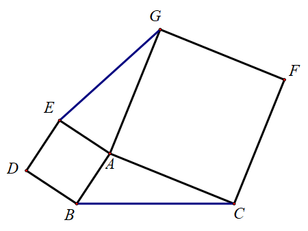
如图2，我们取 DF 的中点，连结 PB、PC，则有 PB=PC 且 PB⊥PC（同理，有 PE=PG 且 PE⊥PG）．
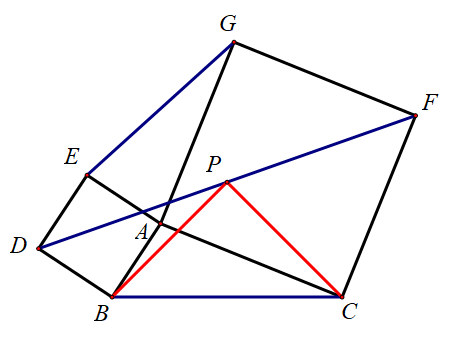
我们注意到，这个图形只跟下半部分（或者上半部分有关），因此这类题目经常以两个「等腰直角三角形」的形式出现，如图3：
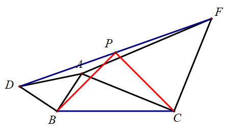
证明方法
这个题的解决方法也有很多，可以用「倍长中线」，可以构造「三角形的中位线」，也可以构造「梯形中位线」．
倍长中线
如图4，倍长 BP 至 K，可以证明 △ABC≅△FKC，注意这是一个旋转 90∘ 的全等，因此 CB 和 CK 垂直且相等，我们得到了一个等腰 Rt△CBK ，于是它的一半 △PCB 也是一个等腰直角三角形．
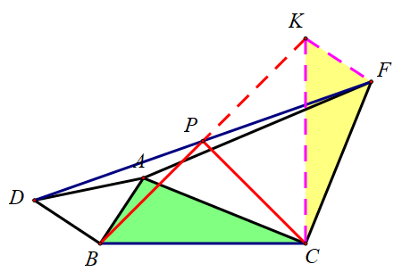
构造三角形的中位线
如图5，分别取 AD、AF 的中点 M、N，可以证明 △PMB≅△CNP．注意这又是一个旋转 90∘ 的全等，因此 PB 和 PC 垂直且相等．
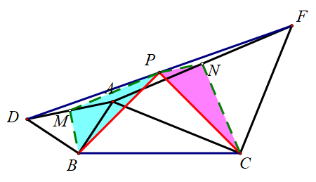
构造梯形的中位线
如图6，分别过 D、F、A 作 BC 的垂线，垂足依次为 J、K、L，则有弦图的模型可知，△BJD≅△ALB，△FKC≅△CLA，于是 BJ=AL=CK，DJ=BL，FK=CL．我们取 BC 的中点 Q，于是 Q 也是 JK 的中点，因此 PQ 是梯形 DJKF 的中位线，故 PQ⊥BC，且
PQ=21(DJ+FK)=21(BL+CL)=21BC=BQ=CQ
因此 △PCB 是等腰直角三角形．
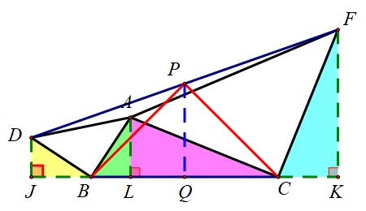
变形
我们需要注意的是，当这两个等腰 Rt△ABD 和 △ACF 旋转到不同的位置的时候，这个图可能看起来变得完全不一样，但是本质上是一个图形，如图7~图10：

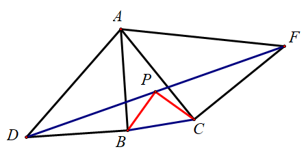
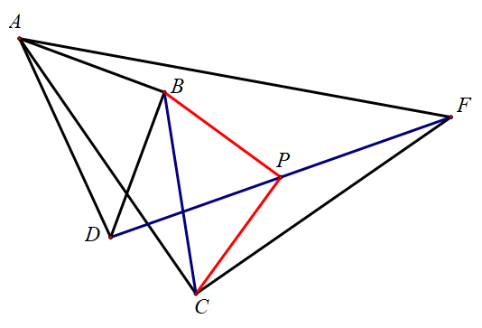
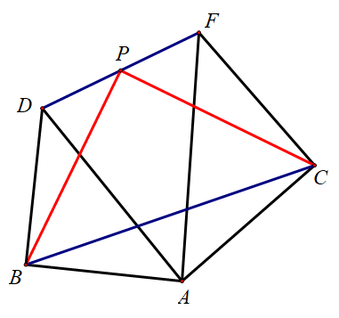
推广
在图3中，△ABD 和 △ACF 都是等腰直角三角形．如果我们把这个条件进行弱化，去掉等腰的条件，但保持两个直角三角形是相似的，即 Rt△ABD∼Rt△ACF （其实就是 ∠ADB=∠AFC），那么 PB=PC 的结论依旧成立．
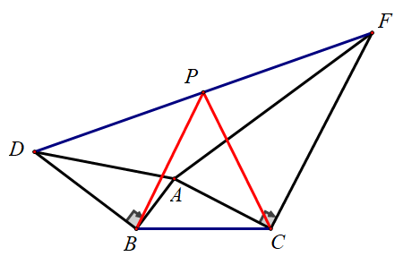
这个时候的解决方法和前面也是类似的．
倍长中线
这个方法和图4类似，只不过把要证明的全等变成了相似．
如图12，倍长 BP 至 K，则
FCKF=FCDB=ACBA
而且
∠KFC=∠KFD+∠DFC=∠FDB+∠DFC=360∘−∠DBC−∠FCB=180∘−∠ABC−∠ACB=∠BAC
因此 △KFC∼△BAC．这是一个旋转 90∘ 的相似，于是 △BCK 是直角三角形，CP 是其斜边中线，故 CP=21BK=PB．
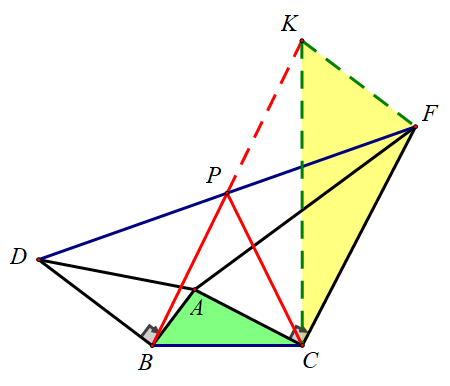
构造三角形的中位线
这个方法和图5完全一样，BM=21AD=PN，MP=21AF=NC，且
∠BMP=∠BMA+∠AMP=2∠BDA+∠AMP=2∠CFA+∠ANP=∠CNA+∠ANP=∠PNC
因此 △BMP≅△PNC，于是 PB=PC．
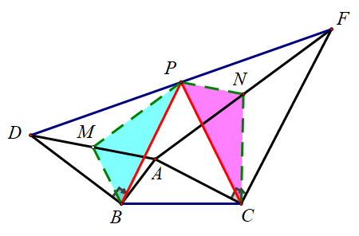
构造梯形的中位线
这个方法和图6类似，不过也是要把证明的全等变成相似．
如图14，△BJD∼△ALB，△FKC∼△CLA，于是
ALBJ=ABBD=ACCF=ALCK
因此 BJ=CK 依旧成立．后面的过程就完全一样了．
我们取 BC 的中点 Q，于是 Q 也是 JK 的中点，因此 PQ 是梯形 DJKF 的中位线，故 PQ⊥BC，且
PQ=21(DJ+FK)=21(BL+CL)=21BC=BQ=CQ
因此 PB=PC．
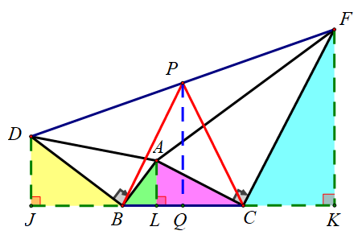
总结一下，我们看到处理中点有两种主要的思路，一个是「倍长中线」，一种是「构造中位线」，包括三角形中位线和梯形中位线．在证明的过程中，还可能会用到直角三角形斜边中线的结论．
对于很多题目，这两种思路都行得通．但是一般来说，「倍长中线」的辅助线比较容易想出来，但后续全等（或者相似）的三角形比较难找，证明也比较麻烦．
而「构造中位线」的思路关键在于选对中位线的取法，因此辅助线不太好做，但是后续的证明一般比前一种方法要简单．
对于不同的题目，我们要注意选择不同的方法．
在本文中，我们讨论了如何对正方形（等腰直角三角形）的结论进行推广，我们保留了直角的条件，而去掉了等腰的条件．
那么，我们还可以反过来想，如果保留等腰的条件，去掉直角的条件，那是否还会有这样漂亮的结论？
如果没有的话，是否可以考虑再加上一些条件（就像我们上面加入了相似的条件），再得到比较好的结论？
关于这种情形，我们放在下一篇文章中来讨论．